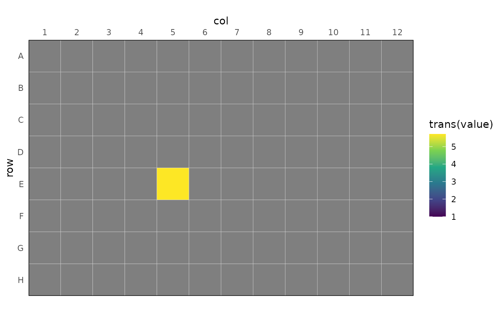

Plot a Plate-Layout of the Value Column
rl_plot_plate(data, value, well = "well", trans = log10)Dataframe with the value column and a column specifying the well ID.
Name of the column containing the value information to be displayed.
Name of the column with the well ID information for formatting the plate layout.
Name of the transformation to apply to the data. Defaults to
log10.
a ggplot2::ggplot() plot.
fl <- system.file(
"extdata",
"calibrate_tecan",
"calTecan1.xlsx",
package = "reluxr"
)
dat <- plate_read_tecan(fl)
mat_d_best <- dat |>
dplyr::filter(signal == "LUMI") |>
dplyr::filter(time_s > 500) |>
rl_calc_decon_matrix("value", "time_s", ref_well = "E05", b_noise = 30)
dat |>
dplyr::filter(signal == "LUMI") |>
dplyr::filter(time_s > 500) |>
rl_adjust_plate(value, mat_d_best, time = time_s) |>
dplyr::summarise(value = mean(value), .by = well) |>
rl_plot_plate(value, trans = log10) +
ggplot2::scale_fill_viridis_c(
limits = c(1, NA)
)
#> Scale for fill is already present.
#> Adding another scale for fill, which will replace the existing scale.
#> Warning: NaNs produced
